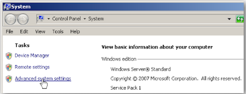
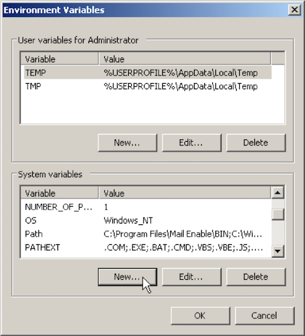

Set-up Instructions
appJar was designed for use in schools - it therefore doesn't require any kind of special installation.
Instead, just DOWNLOAD the ZIP file, unzip, and go - just put the folder in the right place.
Pip Installation
However, if you can install python packages - we support that too!
pip3 install appjar - this will download & install appJar ready for python 3.
pip3 install appjar --upgrade - this will upgrade appJar to the latest version.
NB. If you're on linux/Mac you might need to use sudo: sudo pip3 install appjar
# import the appJar library
from appJar import gui
Single-user Set-up
If you can't/don't want to install using pip, simply:
- DOWNLOAD appjar and unzip it.
- Put the appJar folder in your code folder, and you're done!
# import the appJar library
from appJar import gui
(As long as it's in the same folder as your code, it'll work...)
Linux
If you're on Linux you might be able to make this even simpler.
You might have a site-packages folder, that is already in your path.
In this case, put the appJar folder in ~/.local/lib/python3.x/site-packages/ where 3.x is the version of python that you use.
Multi-user Set-up
If you're trying to install appJar in a school, everyone can download their own copy (see above), or:
- Put the appJar folder in a shared location (eg. a folder on a network drive):
E:\PYLIB - Then have pupils include the following 2-lines at the start of their code:
# add the appJar folder to your PATH
import sys
sys.path.append("E:\PYLIB")
# import the appJar library
from appJar import gui
Advanced Set-up
If you've got friendly technicians, you can even avoid having to always add appJar to your path...
Windows
Create an environment variable, which will mean E:\PYLIB is always in your path.
- Open Control Panel
- Navigate to System -> Advanced System Settings
 - Click the Advanced tab

- Under System variables, click the New.. button
 - Set the Variable name: to be PYTHONPATH
- Set the Variable value: as the folder you put appJar in (eg. "E:\PYLIB")

- Press OK, and you're done!
Linux (Raspberry Pi) /MacOS
If you're running python from a terminal:
- Type the following:
echo 'export PYTHONPATH="${PYTHONPATH}:~/Documents/PYLIB"' >> ~/.bashrc
- Reopen the terminal (or type
source ~/.bashrc), and you're done! - NB. Change
~/Documents/PYLIBto the folder where the appJar folder is located.
IDLE on Linux (raspberry Pi)/MacOS
If you're running python in IDLE, you'll need to add appJar to your site-packages
- Launch a Terminal
- Type the following:
mkdir -p ~/Library/Python/3.4/lib/python/site-packages
cd ~/Library/Python/3.4/lib/python/site-packages
echo '~/Documents/PYLIB' > appJar.pth
- Close the terminal, and you're done!
- NB. you'll need to make sure the version number (3.4) is correct.
- To check your version, run this in Python:
import sys
print(sys.version)
PyScripter
If you're using PyScripter then follow the installation instructions above.
If you're having problems appending to the path, you can try escaping the path:
sys.path.append("E:\\PYLIB")- putting double slashes might fix the issue.
Alternatively, you can use the PyScripter menus:
-
Put appJar in a folder - in this case it's on the Desktop
-
Click Tools -> Python Path...
-
Either type or navigate to the folder containing appJar
-
Press Add, followed by OK
NB. You will have to do this every time you run PyScripter, so it's better to get appJar installed properly if you can.
PortablePython
If you are using PortablePython then you simply need to drop the appJar folder into the Lib folder of the PortablePython installation.